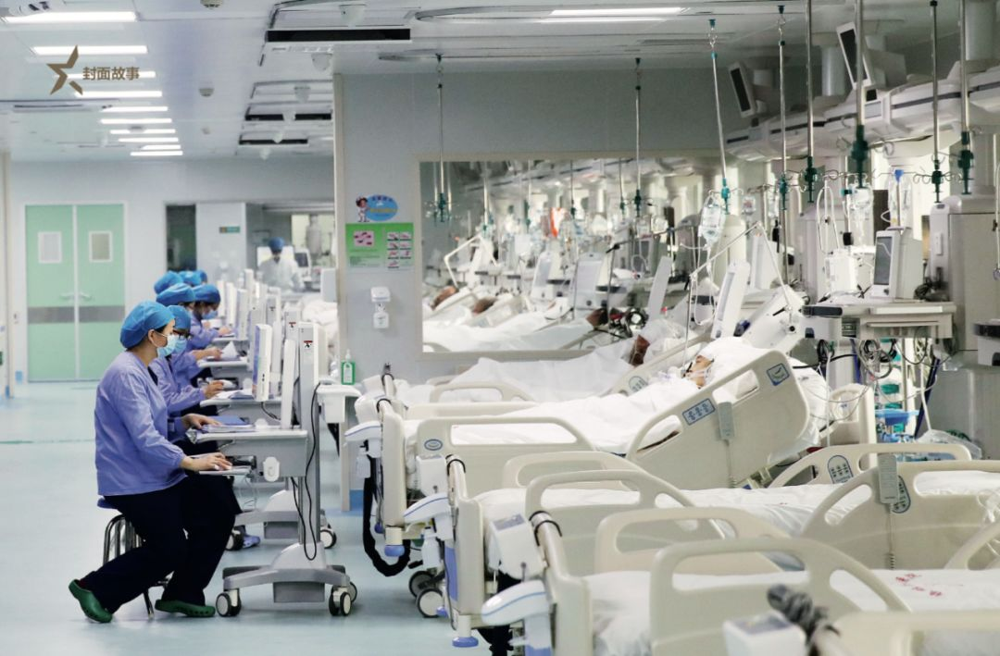
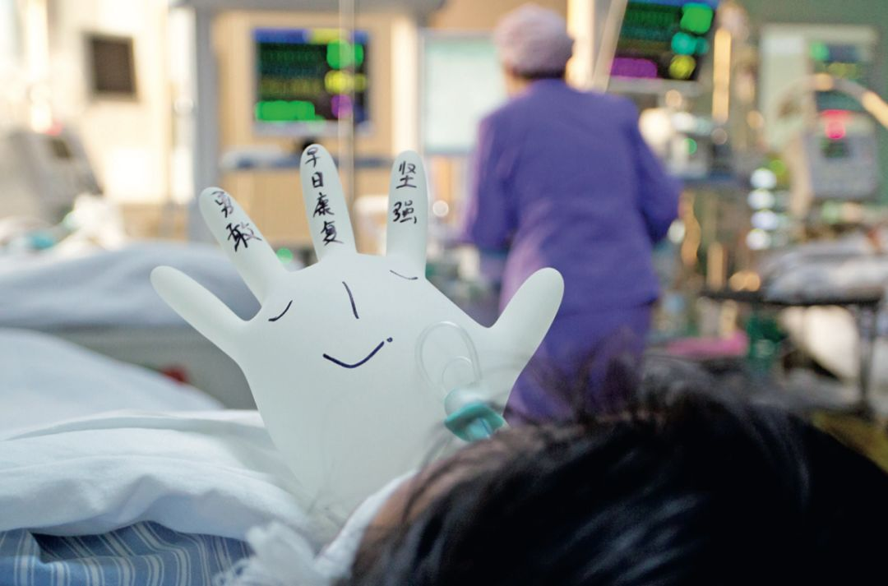

封面报道|四大ICU主任详解病毒 来自最前线的防治之策
原文链接 备份链接 “彭主任，急诊室一个31岁的新冠肺炎病人心脏骤停了，您快来看看，要不要转入ICU。” 2月4日晚上7点半，武汉大学中南医院重症医学科（ICU）主任彭志勇刚从湖北天门考察疫情回到办公室，和财新记者聊了不到十分钟，就 …

中国人均占有的ICU病床数，与西方发达国家相比显然不够。
在ICU人员配备不足的情况下超负荷运转，
就不可避免地将病人置于潜在的危险中

新冠肺炎感染后期，有相当比例的病人出现呼吸衰竭、肾功能衰竭、循环衰竭。重症管理的专业化科学监测、生命支持与救治，将是有效减少死亡率的重要措施。因此，新冠肺炎阻击战迫切需要大批重症医学专业医护人员奔赴一线。
1月29日，中华医学会重症医学分会、中国医师协会重症医学医师分会、中国病理生理学会危重病医学专业委员会，联合发布《齐心协力，拯救生命，打赢新冠肺炎阻击战——致全国重症医学专业同道倡议书》表示，“重症医学的专业使命，决定了我们必将成为此次阻击新型冠状病毒肺炎流行战役中的重症病人生命救治的主力军”。
2019年6月3日出版的第901期《中国新闻周刊》，专门介绍了重症医学，这一重要的医学分支在中国的发展状况。

云南昭通市镇雄县人民医院的ICU病房。图/IC
重症监护病房的扩张与困境
*******本刊记者/彭丹妮*******
*******发于2019.6.3总第901期《中国新闻周刊》*******
推开河南省商丘市第一人民医院ICU病房紧闭着的大门，可以看到病床上的病人大多闭着眼，他们有的处于昏迷状态，有的被注射了镇静剂，偶尔有人醒着，脸上也看不出表情。在这里，社会地位、身份与性别失去了意义——十几位病人不穿衣服，也几乎不进食，病号服从中间被剪开盖在身上，各种管道布满全身，鼻饲管为身体补充着营养液。昼夜不停运转的设备和从不熄灭的灯，让这个封闭的空间里没有了白天和黑夜的概念。为防止因谵妄或烦躁而挣脱各种诊疗管，很多病人的手脚都被带子束缚在床沿上。
这家医院的ICU在10年前刚成立时有13张病床，如今已增至20张。为应对不断增长的病患需求，设有28个床位的第二病区即将投入使用。此外，可移动的病床随时准备着，以便在床位不够时加床。在高峰时期，预计两个病区共可收治80位病人。
一位病人呻吟着，断断续续地说“我要回家”，却无人理会。按原卫生部《指南》（见下文）的要求，一张ICU病床应配备3名护士；但在这里，一名护士就要照顾三张病床。各种检查；药物补充；定时记录监护仪上的心率、血压；清理病人的大小便，以及在固定的时间给病人翻身以免背部生褥疮……这些活儿已经让护士们在12小时一班的工作时间内不堪重负，她们无暇顾及被照料者的精神状况甚至尊严。“一到旺季，这儿就像菜市场一样。”一名护士说。
但这些，都阻挡不了ICU快速扩张的脚步。
快速扩张
ICU并非一直都这么火爆。2009年，当刘小军出任郑州大学附属第二医院重症监护科主任时，发现该院ICU创立三年来，虽然只有8张床位，但依然“吃不饱”。相比之下，在与它相距不足5公里的“全球最大医院”——郑州大学附属第一医院的ICU里，上百张床位却长期人满为患。若非迫于国家对三级医院必须有ICU病房的硬性要求，郑大二附院的ICU也许早已关门大吉了。因为几乎收不到什么病人，科室没有奖金，医护人员缺少成长空间，人心涣散。同事们对刘小军说，“你来错了地方。”
ICU，即重症监护病房，是医院集中监护和救治重症患者的专业病房。它的雏形可追溯到1950年代初期。当时，小儿麻痹症在丹麦哥本哈根造成许多人死于呼吸衰竭。负责治疗的医务人员发现，将病人集中管理，切开气管并应用人工呼吸支持治疗后，死亡率从原来的87％下降到 40％。
在丹麦诞生了世界上第一个ICU病房的30多年后，1982年，中国第一张为外科手术而设的ICU病床在北京协和医院建成。两年后，协和成立了中国第一个重症医学科室，有7张病床，由被称为“中国重症医学之父”的陈德昌医生坐镇。
1989年，原卫生部正式要求所有三级综合医院成立ICU，全国重症医学科的建设应声而起。2009年，原卫生部正式宣布在《医疗机构诊疗科目名录》中增加“重症医学科”诊疗科目，并发布了《重症医学科建设与管理指南（试行）》（以下简称《指南》）。《指南》要求，全国二级以上综合医院需设立至少一个ICU，且三级综合医院重症医学科床位数应占医院病床总数的2％~8％。
上任之初，刘小军就决心改变郑大二附院ICU“半死不活”的状态。他放下省级三甲医院科主任的身段，一到周末就去省内各县市见同行。在他的“推销”下，当基层医院ICU大夫需要请上级医院医生会诊的时候，往往首先想到的就是他们认识的那位省里的专家刘小军。
如今，郑大二附院ICU已经拥有7辆救护车，一个月从基层转运来的病人有近200个，成为全国单病区外接病人最多的ICU科。有了病人，该院ICU病区也开始了每两年一次的扩张步伐，从8张病床增至13张、20张，有时还要增加临时床位。2014年，ICU整体搬到新病区，开设了40个床位。
郑大二附院ICU扩张的背后，是全国重症医学科的大发展。自中国公立医院在2003年后开始一轮扩张潮以来，ICU成为医院评级的重要指标，迎来其高速发展期。在北京协和医院ICU主任、中国医师协会重症医学分会会长杜斌看来，“近年来，国内大多数地方的ICU发展都很快，绝对超过了医院发展的平均速度。”
浙江新安国际医院重症医学科主任医师殳儆告诉《中国新闻周刊》，她原来所在的嘉兴市第一医院，ICU病房从最初的12张床一路增至接近30张床，仍显不足，后来又增设了呼吸科ICU。她说，“每家市级医院甚至顶尖医院都遵循了这样的发展路径：先是增加普通ICU病房的床位数，再设立专科ICU。很多医院在整体搬迁后，又在新址上设立规模更大的ICU。”
“ICU今后应该是综合医院或者大型医院里最大的科室。”中日友好医院呼吸与危重症医学科主任詹庆元说，“将来彻底实行分级诊疗后，大医院靠什么活？一个是疑难杂症，一个是重症，然后还有大手术。”
刘小军也指出，“实行县域综合医改后，国家要求大病不出县。现在很多地方的农村患者外转率只有5％，那么，省级医院或大型医院的普通病房，哪来的病人？在这个大背景下，今后所有科室的床位都可能减少，唯独ICU的床位会增加。”
虽然ICU在快速扩张，但殳儆很少见到哪家医院的ICU在床位和人手方面不紧张，病患的需求仍难以满足。
作为首都医科大学附属复兴医院院长，席修明是中国危重症医学领域的开拓者之一。他认为，从目前情况来看，中国人均占有的ICU病床数，与西方发达国家相比显然是不够的，国内的ICU还远未达到供需平衡点。世界重症与危重病医学会联盟提供的数据显示，德国、加拿大每10万人拥有的ICU床位数分别高达24.6和13.5张。
2016年，中华医学会重症医学分会部分成员在《中华重症医学》杂志上发表的全国ICU普查结果显示：以2014年人口为参照，中国每10万人拥有的ICU床位数平均为3.19张。不过，杜斌解释说，该调查未将专科ICU纳入统计范围，而综合ICU与专科ICU的床位数大致持平，这意味着这一数字可能翻一倍，但即便如此，与德国、加拿大的数据依然相差甚远。
中国人民大学人口与发展研究中心、北京社会建设研究院教授翟振武及其团队完成的《2015~2100年中国人口与老龄化变动趋势》显示，中国60岁及以上老年人口占总人口的比重将在2024年左右突破20％，65岁以上老人占比将在2027年左右突破15％。到本世纪上半叶，中国老龄人口将进入井喷期。
詹庆元说，“在ICU里，70岁算年轻人，80岁算中年人，90岁算老人。”对于ICU尤其是内科ICU来说，老龄化带来的挑战是显而易见的。“老年人更容易发展为重症，这些病人通常很难治，这一人群又很庞大，所以今后ICU的资源肯定是不够的。”
按照原卫生部《指南》的规定，ICU床位使用率以75％为宜，但《中国新闻周刊》走访多家医院的ICU发现，从省级医院到地市级医院再到县级医院，从中原省份的河南到沿海的浙江，在ICU的旺季，加床是普遍现象。对此，ICU的医生们理由充分：病人那么危重，如果拒收将会危及他们的生命，谁来负责？
另一个未被提及的原因是，由于对公立医院的财政投入较少，在经济压力下，即便已经超出核定床位，医院依然不愿意流失病人，尤其是需要入住ICU的花费高的危重病人。

ICU 病房内，护士为患者做心肺复苏抢救。图/IC
“压床”困境
在中日友好医院的内科重症ICU，一位91岁的老人已经以同样的姿势、同样的治疗方式在病床上生活了四年多。ICU里那些让病人难以忍受的地方，如24小时不停的监护仪报警声、不分白天夜晚从不熄灭的灯光、因各种诊疗管缠身因而极其有限的活动空间等等，对他而言没有造成困扰，由于罹患中枢神经系统疾病，他全身几乎失去知觉。
这种情况并非个案。当ICU动辄数十万的医疗费让许多经济能力有限的家庭望而却步的同时，一些从ICU获益不大但有足够经济条件支撑的病人，却长期占用稀缺资源。他们往往少则数月、多则数年地依赖呼吸机等生命支持技术，有些病人身体其他机能尚好，但中枢神经系统出现不可逆的损伤，如脑出血、脑梗塞引起的偏瘫甚至长期昏迷。这些病人往往成为ICU“压床”的主要人群。“几乎所有的ICU都收治过这类病人。”杜斌说。
什么样的人最适宜入住ICU？原卫生部《指南》指出，重症监护室收治的病人包括以下四类：急性、可逆、已经危及生命的器官或者系统功能衰竭，经过严密监护和加强治疗短期内可能得到恢复的患者；存在各种高危因素，具有潜在生命危险，经过严密的监护和有效治疗可能减少死亡风险的患者；在慢性器官或者系统功能不全的基础上，出现急性加重且危及生命，经过严密监护和治疗可能恢复到原来或接近原来状态的患者及其他适合在ICU进行监护和治疗的患者。
该《指南》同时指出，慢性消耗性疾病及肿瘤的终末状态、不可逆性疾病和不能从加强监测治疗中获得益处的患者，一般不是重症医学科的收治范围。
席修明撰文指出，决定患者是否转入 ICU 的关键，在于对其疾病是否有益。那些情况良好且没有必要监护的患者，或没有希望恢复健康并提高生活质量的患者，均不需收入ICU。
多位ICU医生认为，ICU救治效果最显著的，通常是严重急性的可逆病例，比如，车祸等意外突发事故造成的多发性创伤性疾病，经大手术后转入ICU进行加强监护和治疗，病人在病情稳定之后完全可能恢复。
然而如何定义“获益”，同时也是一个伦理问题。当家属态度坚决要求不遗余力地进行维持的时候，医学指南拗不过社会风俗。席修明认为，某种意义上来说，这类病人在ICU里也是获益的——因为他们一出ICU就面临死亡，但问题是，如何看待这种无质量的活着？这类病人是否非得长期滞留在ICU里得到加强照护？
詹庆元认为，ICU不宜收治这类病人。当一些高龄病人本身有多种并发症，用ICU维持其生命却带不来任何生活质量的改善时，一种有尊严的死亡可能是必须要考虑的。
北京医科大学附属朝阳医院李洁等人于2012年年底对北京市22家三级医院长期滞留ICU患者进行过摸底调查，结果发现，26％的患者住ICU时间超过21天，最长的病例达到5年以上。这些患者年龄区间在59岁至91岁。缺乏有专业人员照护的机构是他们无法转出的最常见原因。

昼夜交替间，ICU病房内生命的奇迹也许时刻都在上演。图/ 视觉中国
席修明所在的复兴医院ICU病房有24张床位，有一半以上都属于慢性危重症，其中有6位患者已经住院一年以上。慢性危重症一般是指在ICU停留7天以上，主要依赖呼吸机等生命支持技术的危重患者。
长期滞留ICU，首先意味着医疗资源的大量消耗，一张病床一年耗费的资源大概达到几十万，而当ICU床位紧张时，这类病人造成的资源不合理使用矛盾就更为明显。
他们的病情处在一个尴尬的中间地带——虽然不需要ICU里复杂的高强度治疗，但“家徒四壁”的普通病房中又没有呼吸机、营养支持等高科技设备来维持他们的生命，普通病房的医护人员在数量和技能上也远不足以承担重症病人的护理工作。专家指出，这反映出中国医疗体系的一个结构性缺陷——对急慢性疾病没有做出区分。
在2019年的两会上，国家卫健委主任马晓伟指出：中国的医疗服务以急性病为主导，恢复期、康复期的医疗服务发展缓慢，甚至可以说是短板。因此，很多慢性病患者，如肿瘤化疗病人、脑卒中（俗称“脑中风”）病人，都依赖城市的三甲医院。他表示，随着中国人口老龄化的加快，慢性病医疗服务的需求无疑将成倍增加，急慢病分开迫在眉睫。
对于ICU来说，将慢性重症和急性重症区分开来，让急性重症患者使用ICU，才能更好地发挥ICU对于危重患者的救治价值。席修明解释说，慢性重症患者的生命支持治疗以康复锻炼、营养、护理为主，而急性危重者的治疗包括休克抢救、各类手术、密集的仪器监护。
在欧美国家，长期加强监护医院（LTACH）或护理中心（Nursing Home）是慢性重症病人的主要收容处。这样的分割一方面杜绝了因长期滞留ICU而占用急性重症患者的医疗资源；另一方面这类医疗机构医生人数很少，多以护士为主，所以费用较低，有利于降低医疗保险负担。
国内也有一些医院试图建立过渡病房以期缓解压床患者的转出难问题。2013年，北大国际医院携手宣武医院神经外科专家凌锋成立了康复中心，席修明参与过其中ICU的建设。他说，当时的想法是把二十多张ICU病床发展为类似于欧洲的“脱机中心”，将医院里长期依赖机械通气的病人转过来，帮助他们进行康复并脱离呼吸机，最后却因为没有病人而不了了之。
对此，席修明指出，医疗报销政策尚未配套、什么样的慢性病纳入收治的标准不明确、社会接受程度低，是中国LTACH病房发展的主要阻碍因素。
为了解决长期无法撤离呼吸机的压床病人对ICU资源的长期占用，詹庆元所在的中日友好医院已经与一家社区医院开展合作，一个容量为22张床位的高依赖病房（HDU， High Dependency Unit）有望在未来一个月内开始投入使用，医保报销的障碍也将消除。
HDU的叫法来自英国，是介于ICU与普通病房之间的缓冲地带，长期呼吸机依赖者、需定期翻身吸痰、选择积极维持生命的晚期肿瘤患者等是HDU的主要收治对象。由于HDU所需设备和人力比ICU更轻，因而不会占用ICU为危重患者准备的宝贵医疗资源，不仅如此，一些HDU的实践已经表明，病人在这里可以得到更好的康复训练，并减少并发症。
人才参差
实际上，ICU也分淡旺季。在流感高发的冬季常常一床难求，到了天气回暖的春夏季节，则相对清闲。在淡季，刘小军的ICU科室曾两周都没有一个病人。但在高峰期，他们同时收治过70多位病人。为应对这么多病人，只好让所有休息的医护人员都来加班，医院还从别的科室调来30多名护士。有的人一个班下来，双脚都肿了起来。
依据原卫生部《指南》，床位数与ICU医师人数之比应为1:0.8以上，床位数与护士人数之比应为1:3以上。但杜斌等人在2010年指出，大陆地区每张病床的护士配比平均在1.37~2.02之间。多位专家坦言，以当前极低的护理收费与ICU庞大的人力成本支出，《指南》所指定的标准不可企及，人员配置稍好的ICU顶多也只能达到1:2.5。比如，在中日友好医院，这一比例达到了1:2.2。至于1张床配备0.8个医生的要求更是无从谈起。
国外ICU对护理人员的数量要求很高，以英国为例，一张床位至少配置7名护理人员。专家指出，对于分秒必争的危重病人来说，医护人员的数量与病人预后直接相关，人员配置越高，病人照看和治疗得越精细。
在ICU人员配备不足的情况下超负荷运转，就不可避免地将病人置于潜在的危险中，且病房的安全性、秩序及环境都面临挑战。
对于加床的种种理由，杜斌质疑，“真的到了一个医院必须要收治超额病人的地步吗？在一些医院ICU人满为患的同时，还有另一些医院的ICU根本住不满。为什么病人不愿意去那些医院？这才是医疗决策者该想的问题。”
2009年深化医改启动以来，为解决看病难问题，分级诊疗作为重点问题被频频提及。然而“虹吸效应”依旧明显，人财物仍然过度地集中在少数大医院。刘小军举了一个例子，在河南省最偏远的台前县，他曾去做技术帮扶，发现当地医院的ICU里一位病人都没有。“因为当病人住进来的时候，大夫只能说‘这个病很重，我以前没见过，不知道怎么办’。这个时候，病人家属会怎么选择？”
北京大学国家发展研究院经济学教授刘国恩指出，居民不去基层医疗机构就诊的主要原因，就是对医生专业技能的担心，即对医疗服务质量的担心。“至少提供正确的医疗服务应是各级医疗机构的底线。卫生技术人员的专业知识和临床技能是基础，但现况仍然是令人担心的。”人大财经委2018年底提交的一份调研报告指出，优质医疗人才供给不足且配置不均是分级诊疗开展缓慢的主要障碍。
在河南省，很多县级医院为了创二级医院，纷纷设立ICU病房。但刘小军指出，目前的情况是，有三分之一的县级医院重症医学开展能力不够，主要原因是没有人才，缺医生、缺护士。郸城县中医院今年创二级医院，开设重症医学科。这间有11张病床的ICU病房目前仅有四名医生，其中三位是专科毕业或在职本科学历。从从医经历来看，他们此前在神经内科或急诊科工作，均没有重症医学背景。“除了县人民医院好一点，县二院、县妇保健院、县中医院这些日子不好过的，收入上不来，更加难招到人才。”
多位ICU从业人员认为，不同层级医院之间在医疗硬件资源方面的差距已经逐渐缩小。浙江省立同德医院ICU主任胡马洪告诉《中国新闻周刊》，在浙江，即使是县级医院，也都能买得起被认为是当前最先进的生命支持设备人工膜肺（ECMO），但关键是，人才方面的差距依然较大。杜斌指出，时至今日，重症医学已经发展成为独立的医学专科，其理论体系、专业知识与技能并非传统学科能够涵盖，需要经过系统的理论学习和临床实践方能掌握。
临床治疗的标准化或同质化，被公认为是医学学科发展成熟的重要标志。面对一个急性心肌梗死病例，按理说，治疗方案无论是在北京还是在广西都应该是一样的。杜斌说，“但现实情况令人遗憾，医院间的差别太大了，这种差别肯定并不是技术设备，而是在治疗理念与掌握的知识、技能方面。”

ICU病房内，医护人员将手套吹成气球的形状，写上一些鼓励的话，为病人加油鼓气，给病房增加了一些生气。图/ 视觉中国
“不同质，这是中国医学人才培养中最大的问题。”在詹庆元看来，面对同一个疾病，即便在不同的医院接受培训，培训后医生在疾病的处理方案上原则上应该是一致的。但目前的情况是，一个医生能够得到怎样的培训，很大程度上取决于科室主任的培养方案和思路。席修明也认为，培养一个好的年轻医生，关键在于毕业后的继续教育，其中最重要的就是综合病人各种信息之后做出治疗决策的能力，而中国在这方面的规范化培训体系才刚刚起步。
与国外医师教育和培训统一的高门槛不同，中国的医学教育水平参差不齐，要想缓解一部分医院的ICU“撑着”而另一部分医院的ICU“饿着”的状态，补齐不同医院医生的诊疗水平、医学生毕业后的同质化培训，就愈发重要。
在论及中国重症医学面临的问题与挑战时杜斌指出，ICU床位数的增加并不意味着医疗质量的相应提高，而从事重症医学的人员才是最关键的决定因素。在国内ICU飞速发展的同时，从业人员缺乏必要的培训是不争的事实。如果不能及时加以解决，必将成为影响重症医学进一步发展的重大障碍。
第二轮医改将农村人口纳入新农合医疗保障体系后，过去很多放弃治疗的重病患者现在能够负担得起更好的医疗。席修明说，这意味着他们在面对生死抉择的时候，不必因无钱救治而放弃挽救生命的机会。他最大的希望是，未来医护人员的配置能够跟得上ICU的发展需求，且部分ICU实行开放式管理，让家属和护士共同给予重症病人更多照护，不再靠镇静剂与各种绑带的约束来“管理”ICU里那些在生死的边缘上挣扎的病人。那样，人文关怀才能在临床医疗中得以充分体现——在最危急的战场——重症监护病房。
值班编辑：石若萧
封面报道之一
《新冠病毒——我们要付出多大代价》
（由5篇报道组成）
*点击下图，一键下单*

封面报道之二
《围城之战——我们如何过关》
（由6篇报道组成）
***点击下图，一键下单***


*在家没事赚现金*
*点击“阅读原**文”了解更多详情 *
原文链接 备份链接 “彭主任，急诊室一个31岁的新冠肺炎病人心脏骤停了，您快来看看，要不要转入ICU。” 2月4日晚上7点半，武汉大学中南医院重症医学科（ICU）主任彭志勇刚从湖北天门考察疫情回到办公室，和财新记者聊了不到十分钟，就 …
原文链接 备份链接 陈德昌说，金银潭医院的重症病人情况比较严重。在他工作的病房里，29个病人有16个都上了呼吸机，同时面临物资短缺的难题。当他们作为上海医疗队进驻时，原有医护人员已连续工作近一个月了。这次出征，比想象中要艰苦。 57岁的陈 …
原文链接 备份链接 【财新网】（记者 萧辉 包志明 实习记者 陈丽金）黄晓波是四川省人民医院重症医学科（ICU）主任，此次四川援鄂医疗队副队长。2020年1月25日，大年初一，黄晓波抵达武汉，对口支援武汉第二批收治新冠肺炎病人的定点医院 …
原文链接 备份链接 【财新网】（记者 萧辉）此次新冠肺炎疫情，在一线抢救的医生们冒了极大风险又最了解现实情况。财新记者2月4日采访身在前线的武汉大学中南医院重症医学科主任彭志勇。他向记者介绍了最初发现疫情的亲身经历和判断、对患者发病周期 …
原文链接 备份链接 走进武汉金银潭医院，第一感觉是安静。与在武汉闹市区其他综合类的三甲医院不同，这家传染病专科医院，楼与楼之间隔得很远，种了好多树，即使在冬季也是郁郁葱葱。收治了几百位新型冠状病毒肺炎患者的住院楼，门窗紧闭，站在楼下几乎听 …